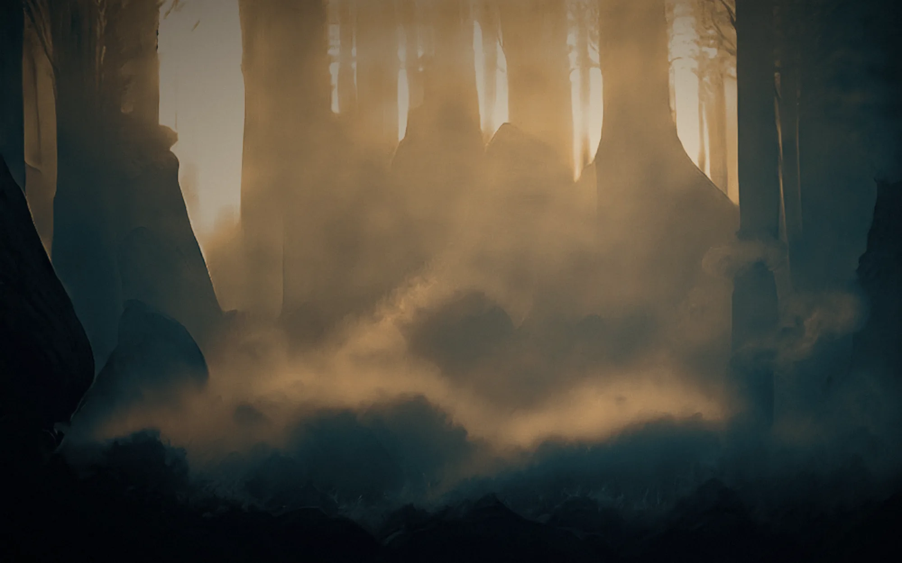
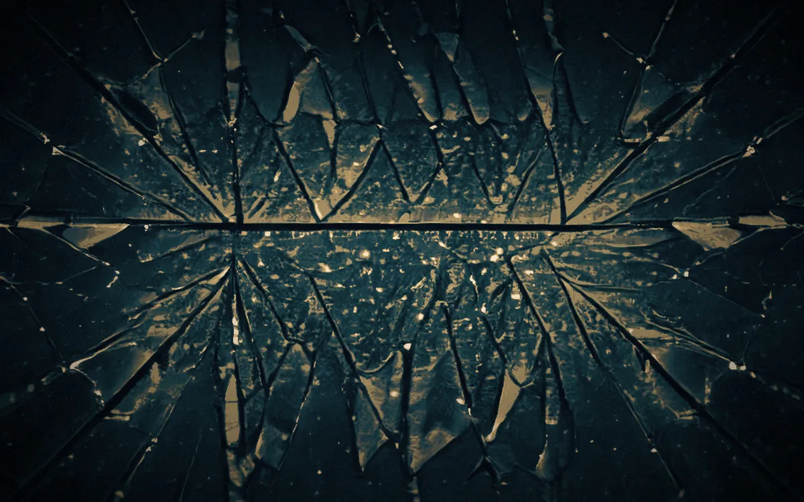
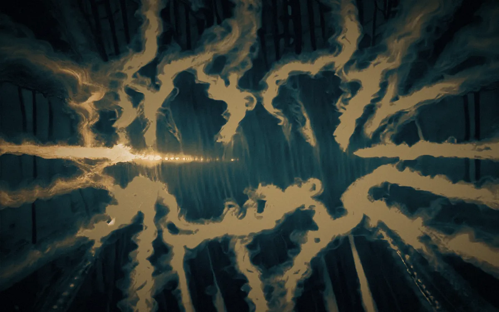
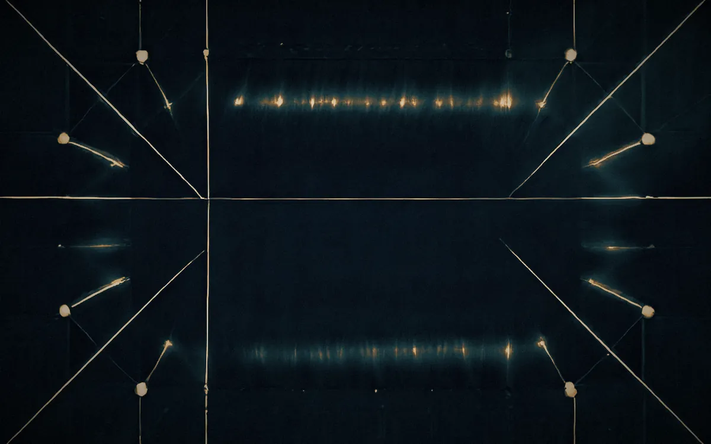

AURA HARNESS · Agent workstation
Specimen 01 — a software engineering agent, described by what it does.

01Identity

02Method

03Receipts
AURA HARNESS
Built on the machine that serves it.
dusancar-sudo.github.io/specimen-01